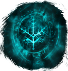

Открыть в интерактивной вики →
| Уровень | 1 |
|---|---|
| Сила (PvE) | 16 482 |
| Аспект арены | Gherudu |
| Здоровье | 999 999 |
| Мана | 100 000 |
| Выносливость | 100 000 |
Дроп


Статистика

Уровень: 1
Здоровье: 999 999
Мана: 100 000
Выносливость: 100 000
Умения
| - | - | - |
Иммунитеты / особые умения
Устойчивость к кровотечению
Иммунитет к оглушению
Устойчивость перед лицом смерти
Призыв: Фанатик
Команда
-
Локация
Склон — ивент Двор Мораны